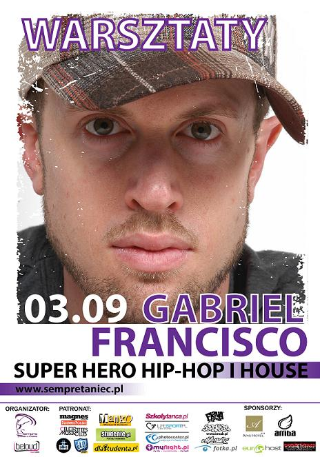

GABRIEL FRANCISCO:
Tancerz, choreograf, międzynarodowy prezenter i juror, poeta i pisarz
Gabriel już prawie 10 lat kształtuje i tworzy własny styl ruchu,oraz dzieli się swoją pasją bawiąc i inspirując tancerzy na całym świecie. Będąc jednym z najmłodszych instruktorów uczących American Hip Hop i House na arenie międzynarodowej był też osobą bardzo pomocną w założeniu i dalszym działaniu wielu profesjonalnych tanecznych stowarzyszeń w Anglii, Szwajcarii, Polsce i Portugalii.
Prowadził zajęcia m.in w Kalifornii, Anglii, Francji,Finlandii i Szwajcarii.
O stylach, którymi się zajmuje mówi:
Hip-Hop - Elektryzująca jako mieszanka taktów i rymów wyrażona poprzez ciało. Tu ruchy są ciągłe, naturalne, pozwalające niejako bezszwowo poruszać się w przestrzeni.
New Style to styl łączący w sobie łagodność tańca współczesnego, agresję i siłę Hip Hopu z duszą pierwotnego Jazzu. Ten styl tańca uosabia pełen napięcia styl Los Angeles, Nowego Jorku, Londynu, Zurychu i Rzymu.
House - Powstał w nocnych klubach wschodniego wybrzeża, a jego korzenie są tak mocne i unikatowe jak korzenie Hip Hop. Ten styl łączy szybkość i relaks. Zajęcia z House'u są rzadką możliwością do poznania prawdziwego, jeszcze nie skomercjalizowanego stylu tańca.
Gabriel szkolił tancerzy do występów z takimi muzycznymi gwiazdami jak Santana, The Pussycat Dolls, The Black Eyed Peas, czy Mariah Carey.
Gabriel w You Can dance przygotowywał choreografie Hip-Hopowa dla Maksa i Ady.